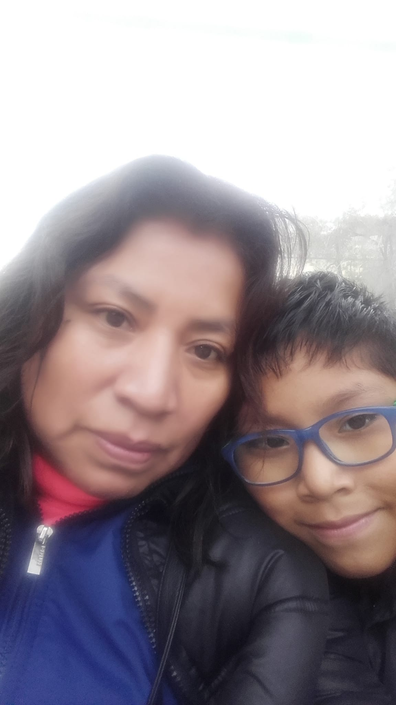
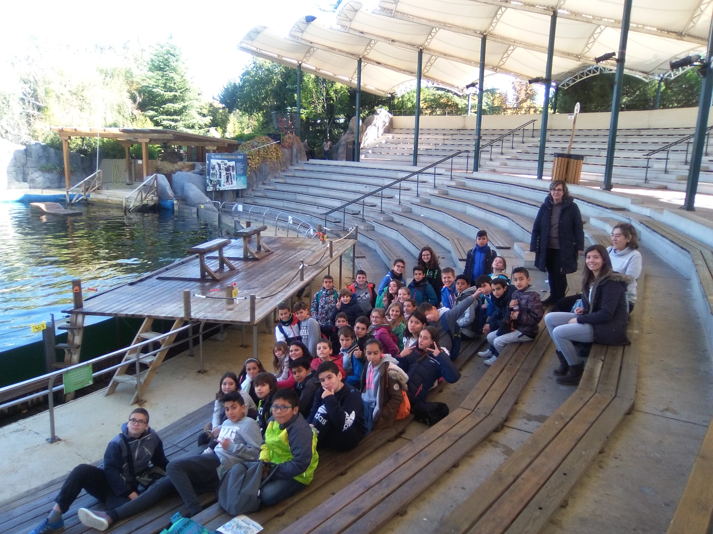
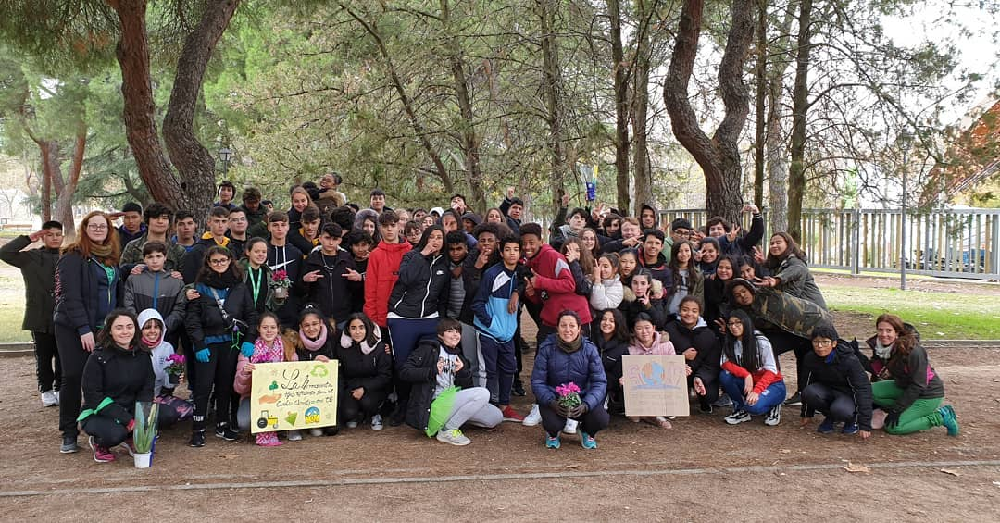

Primeros años
Nací en Madrid, España en el año 2005, desde mis primeros años no me
acuerdo muy bien. Me gustaba ir al metro de Madrid, viajar y mirar
la ventanilla, pero sobre todo me gustaba ir por el Renfe por la
velocidad que iba...
Yo era muy inocente y distraido, una de las cosas de los que me
llego a acordar es que en lugares abiertos como en calles amplias
como Sol para dar un ejemplo, siempre me alejaba de mi familia al
punto de ir por las calles solo...

Foto de mi junto con mi madre a la edad de los 5 años aproximadamente
Toda mi familia provienen de Perú por lo que viví con algunas
costumbres de Perú, lo mayor que me acuerdo es que antes tenía
algunas piezas de Perú, mantel y un cuadro en el salón con un
retrato de
Machu Picchu...
Al punto de que a veces he ido a viajar a Perú de pequeño (última
vez viajado 12/08/2022)
Al punto de que he comido platos peruanos y en mi opinión creo que es una de las mejores gastronomías que
existen en el mundo, al punto de que prefiero más la gastronomía peruana que la española (no significa que no
me gusta, es tan solo que prefiero una más por encima de la otra...)
Niñez
Sentí un gran interes en la informática de niño, especialmente recordaba que
solía haber errores en una pequeña computadora (era la época de los inicios
con Internet) y lo arreglaba siempre empleando la técnica más fácil de toda
la vida: Reiniciar el sistema. Desde ese momento siempre me preguntaba como funcionaba
los ordenadores, como era el Internet, que hay más allá de los componentes informáticos, que era la red...
Desde que empeze a ir a la escuela de 5 años, yo era muy inocente y
torpe, pero siempre llevaba una sonrisa, una de las cosas que
siempre me cuestionaba era...
"Si yo tengo 4 años y la clase es para niñ@s de 5 años, que pinto yo
aquí..."
Era bastante curioso y me preguntaba muchas cosas, en ese entonces
no conocía a nadie ni era amigo de nadie al punto de que me juntaba
con cualquiera sin preguntar su nombre...
En ese entonces entré en un colegio bilingüe que estaba cerca de donde vivía, nomás 15 minutos caminando, ese
colegio se llamaba CEIP Vicálvaro, me acuerdo algo de ese colegio como el mini arenero que tenía en la
parte derecha, su enorme patio que realmente me la pasaba corriendo mucho, la biblioteca que era de mis
lugares favoritos a ir,
Llegue a ir a un coro en donde estuve a primeros años junto con mi
hermano tuvo que abandonarlo debido a que el pasaba a la ESO, algo
que me gustaba mucho es que de vez en cuando nos ibamos a teatros a
ensayar con otros coros como si se tratase de una competición, y de
vez en cuando me saltaba clases aburridas o que no me interesaban...
Mayormente me acuerdo haber ensayado villancicos como
Noche de Paz, Ave María y hasta canciones como
La Tarara, Los niños queremos la paz o
Un mundo ideal...
Poco a poco empece a formar mis propias amistades, amigos que no los
veo ya desde hace tiempo pero que me suelo hablar de vez en
cuando... Aunque ahora siendo adolescente me doy cuenta que no todos
me consideraban su amigo, algunas personas se burlaban de mí, se
aprovechaban, la verdad es que nunca lo note, se reían por algo que
decía, en este punto mi madre pensó que sufría de bullying... Yo no
sabía mucho del tema...
En el colegio solíamos hacer actividades con otros de primaria o de curso avanzado o con personas qu
trabajaban ya, y hasta a veces solía ir a excursiones fuera del colegio, ya sea ir a
lugares a aprender algo como museos, bosques y demás... E inclusive
a otros institutos como el que esta al lado (IES Villablanca)...

10/11/2016, excursión en Faunia...
Para el día del fin de curso siempre me acuerdo que era más como un espectáculo tanto para los de primaria
como para los padres y profesores presentes, una vez me acuerdo que tuvimos que interpretar un baile de un
juego, Just Dance 4 - What Makes You Beautiful. A veces se
organizaba eventos como fútbol, los alumnos contra los profesores...
Para ese entonces termine primaria bien y aprobado, partí caminos con mis viejos amigos aunque ya no me hable
ya con ello tanto, aun así me alegro el esfuerzo que di y me sentí orgulloso, especialmente cuando me tocaba
ir a la ESO, yo estaba muy emocionado...
Adolescencia
Para esta etapa de la vida tuve muchas dificultades, no solo en los
estudios, sino también en relacionarme con los demás, en ese
entonces me inscribí en el
IES Simancas
(Instituto que de vez en cuando si tengo tiempo libre suelo
visitarlo...), parecía el niño en la burbuja debido a que no conocía
a nadie, y no sabía como comunicarme, al punto en el que me empece a comportarme de una forma que no llegaba a
comportarme en primaria
Una de las cosas que me di cuenta tarde es que según mis padres yo
había nacido con autismo algo que me hizo tener mis
dificultades tanto en comunicación como en los estudios.
Tenía un aula de apoyo en donde solía ir para preguntar o tener apoyo durante una clase ya sea por mis
nervios o para prestar atención... En estos momentos mi comportamiento empeoraba, empecé a alejarme de todos,
tener muchas insegurirades de mi y al conocer a alguien, al punto que cuando empezaba hablarle, el se
juntabacon otros al punto que sentía que todo la ESO iba a estar solo...

Se realizo una carrera en un parque cerca del instituto, dedicada al cambio
climático...
Para este punto empecé a mejorar contras y siendo mejor persona, pero al final se me añadio una desventaja,
la timidez.
Algo que si fue alejarme mucho de los demás pero juntarme a menudo con algunos con quien
si me entienden. Si quise mejorarme pero no pude para el fin de curso, para ese entonces también fui más
calmado, menos nervioso pero si agobiado (hasta la fecha de hoy intento seguir mejorando)...
Para el punto del fin de curso de 4º ESO, tuve que decicirme entre ir a Bachillerato o hacer una
grado de formación profesional... Al final me decidí por hacer una formación profesional, diciendo
adios a los amigos que hice a los últimos meses de 4º ESO...
Elegí el grado de informática (Sistemas Microinformáticos y Redes), ya por si la
informática era una de las cosas que me interesaban y di asignaturas relacinoadas con los sistemas operativos
como Windows y Linux, conocer las redes y las funcionalidades que puede poseer, las aplicaciones y programas
tanto en el entonrno del sistema, como en el entorno web, etc.
Para este punto creo que ya me conoces demasiado, ahora...